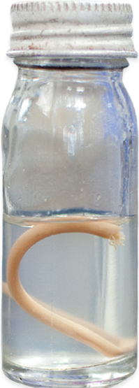

The Sabin Vaccine Institute awarded its 2014 Albert B. Sabin Gold Medal Award to Dr. Mathuram Santosham for his pioneering role in the prevention of deadly H. influenzae type b (Hib) diseases, including pediatric bacterial meningitis and pneumonia. Dr. Santosham’s leadership in research, vaccine efficacy trials and advocacy to prioritize Hib vaccines saved millions of children’s lives worldwide.
Developing Safe, Viable Vaccines

The Sabin PDP is developing vaccines for hookworm and schistosomiasis—the NTDs with the highest disease burden as determined by the Global Burden of Disease Study.
Hookworm is a soil-transmitted helminth that is estimated to infect nearly 440 million people worldwide, and a major cause of anemia affecting maternal and child health in low-resource countries. Limitations with existing drug therapies to treat heavy hookworm infections, the problem of re-infection and the potential for drug resistance necessitate the development of other tools–such as a vaccine–to reduce the disease burden caused by this debilitating parasite.
The Sabin PDP achieved a major milestone in 2014 for its two hookworm vaccine candidates, Necator americanus-Aspartic Protease-1 (Na-APR-1) and Necator americanus-Glutathione-S-transferase-1 (Na-GST-1), expanding Phase 1 clinical trials to include a new site in Gabon.
In 2014, for the first time, the Sabin PDP initiated clinical testing for the human hookworm vaccine in endemic populations in Africa.

The Sabin PDP also initiated Phase 1 clinical trials in early 2015 to test the safety of a preventative vaccine for schistosomiasis, following the development of Schistosoma mansoni-Tetraspanin protein-2 (Sm-TSP-2), a promising new antigen. Schistosomiasis, a serious disease, particularly for children and adolescents, plagues 250 million people and is the world’s second leading parasitic killer after malaria. The vaccine candidate is currently being tested for safety in the United States.
What’s next
The Sabin PDP will expand testing of the schistosomiasis vaccine candidate to endemic populations in Latin America and Africa.